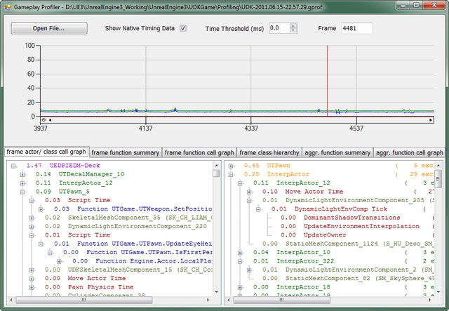
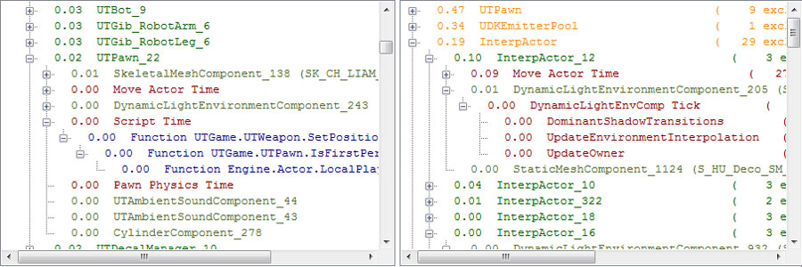
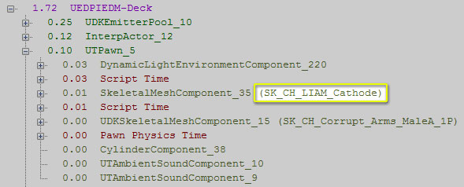
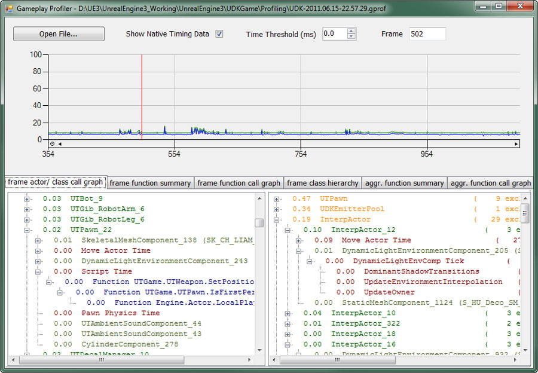
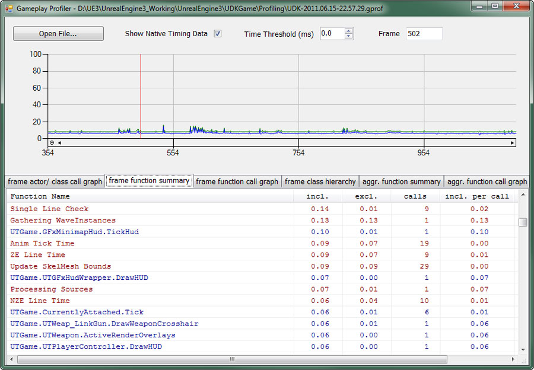
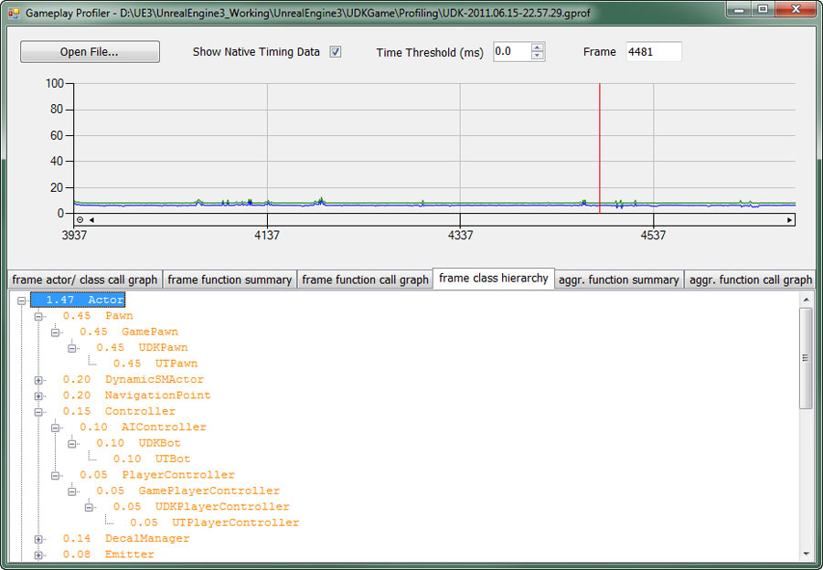
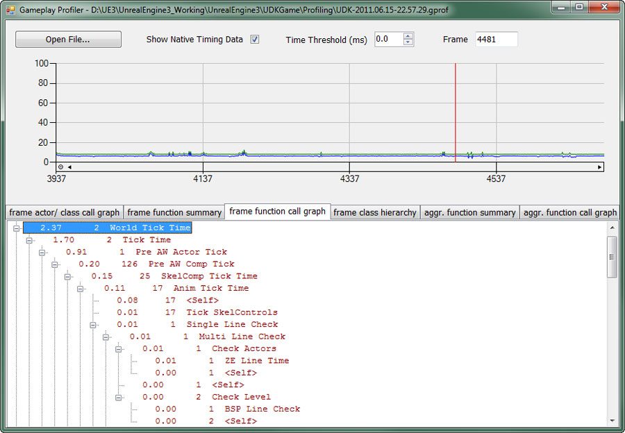
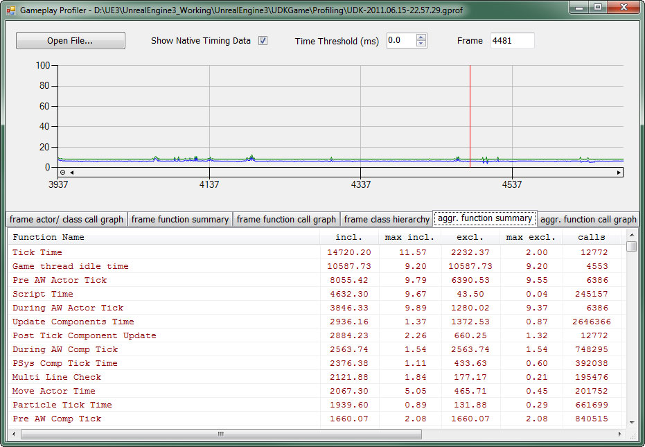
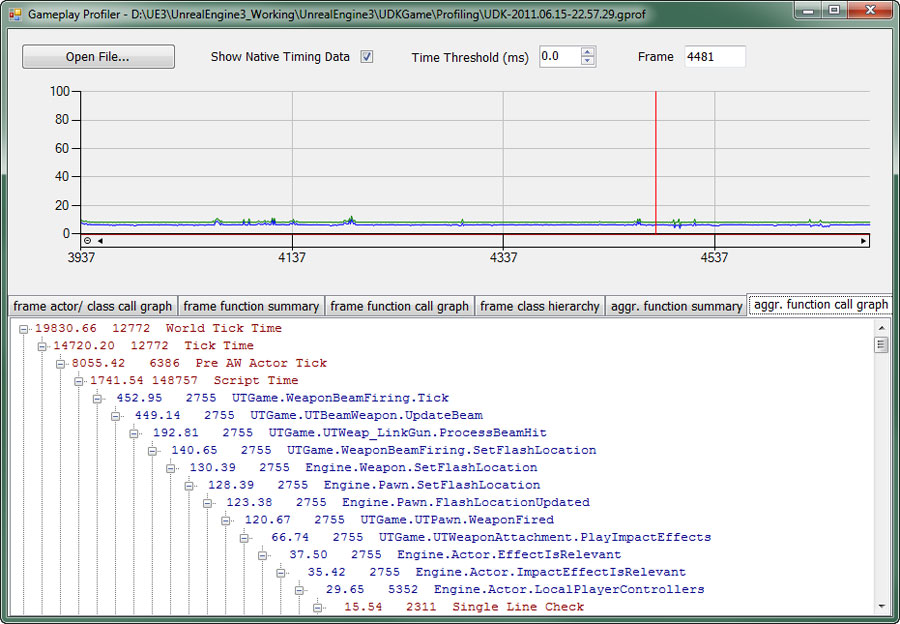

Gameplay Profiler
Overview
The gameplay profiler is a tool that makes use of data captured during profiling sessions allowing you to dig deeper into gameplay code to analyze time spent performing functions. It is meant as a replacement for the Script Profiler.

Creating a Profile
You can start profiling at any time by running the PROFILEGAME START console command and stop it by running PROFILEGAME STOP at the console. Alternatively you can use PROFILEGAME 10 to capture 10 seconds worth of gameplay.
A .gprof file is being written to your [GameName]\Profiling\ folder and is automatically copied to the host PC on console. Beware that the files can get large fairly fast so it's best to only profile around hotspots for say 10-30 seconds.
Viewing a Profile
Start the gameplay profiler executable, GameplayProfiler.exe. and either push the File Open button and navigate to the .gprof file you wish to open or simply pass in the file on the command line.
Note: The gameplay profiler executable can be found in the Binaries directory of the UE3 or UDK distribution.
Output
After loading and parsing the data file you'll be presented with a graph of times and frames along with several tabs displaying the profiling data for the current frame broken down in various manners.
By default frame 0 is selected. A new frame can be selected by left-clicking in the graph or manually entering a frame number in the Frame field above the graph. The current frame is shown highlighted by a red vertical line in the graph.
You can zoom in on the graph by holding the left mouse button and dragging to create a marquee selection around the area you wish to view. Clicking the little circles on the left side of the frame axis or top of the time axis will zoom back out along the respective axis.
The green line in the chart shows the frame time in ms whereas the blue line shows the tracked actor tick/ script time and its relation to the frame time. E.g. not all spikes are related to script or gameplay ticking and this allows identifying and drilling into the ones that are.
The Time Threshold can be used to cause only the data that is in excess of that time to be shown. You can use this to only show events of a certain magnitude, making it easier to find problem areas.
When Show Native Timing Data is enabled, the time spent in cycle counter scopes is displayed in addition to the script timing data. This data normally requires the use of the StatsViewer to be analyzed. Being able to quickly view it alongside the script data directly in the Gameplay Profiler makes tracking down problems that much easier and faster.
The data shown in the tabs is color-coded to make it easier to know what type of data it is.

The types of data are:
- Blue - Script functions
- Red - Native code
- Purple - Levels
- Green - Actors
- Olive - Components
- Orange - Classes
Also, the name of any associated asset will be displayed. For instance, if the data is for a SkeletalMeshComponent, the name of the SkeletalMesh applied to it will be displayed.

Actor/ class call graph
This view is split into two separate call graphs. On the left side is a level -> actor -> component/ function hierarchy for the selected frame that shows each instance individually, whereof on the right side is a grouping by actor class -> actor -> component/ function.
You can use the left side to see which levels are hot in a multi-level scenario (usually the persistant one that has object spawned in it) or look at the relative cost of certain objects.
The right view is useful when figuring out which types of objects are taking time and you can also see how many instances of a class there are. The inclusive and exclusive numbers displayed there represent the number of inclusive and exclusive child nodes in the tree before culling. A high inclusive number usually means a lot of different script functions were called.

Function summary
This view shows each script function called during the selected frame with inclusive and exclusive time, call count and the ratios of inclusive and exclusive time per call. You can sort by a column in descending order by simply clicking on it. The only exception is the function name column, which is always sorted in ascending order.

Class hierarchy
The class hierarchy is a per class view of cost split into actor, actor component and function top level nodes. Worth noting that most actor component and function time is already accounted for by the actor time so you can't simply add up those numbers.
This view can be used to easily explore the class hierarchy and e.g. check how much time was spent ticking AI or how much time was spent in executing UnrealScript.

Function call graph
This tab shows a call graph for the currently selected frame.

Aggregate function summary
This tab is similar to the function summary tab, albeit it aggregates the information for the entire capture duration. Inclusive and exclusive duration and call count are aggregated, max inclusive and max exclusive are the respective maxima for a single frame and the rest of the values are frame averages.

Aggregate function call graph
A call graph for all executaged functions, aggregated over the entire capture duration.

Important!
You are viewing documentation for the Unreal Development Kit (UDK).
If you are looking for the Unreal Engine 4 documentation, please visit the Unreal Engine 4 Documentation site.